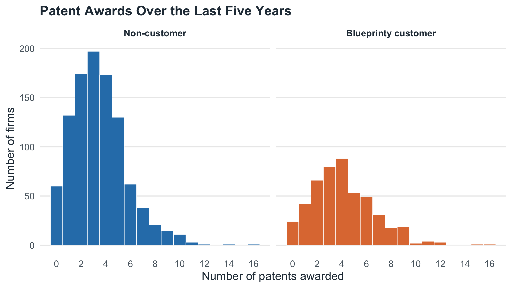
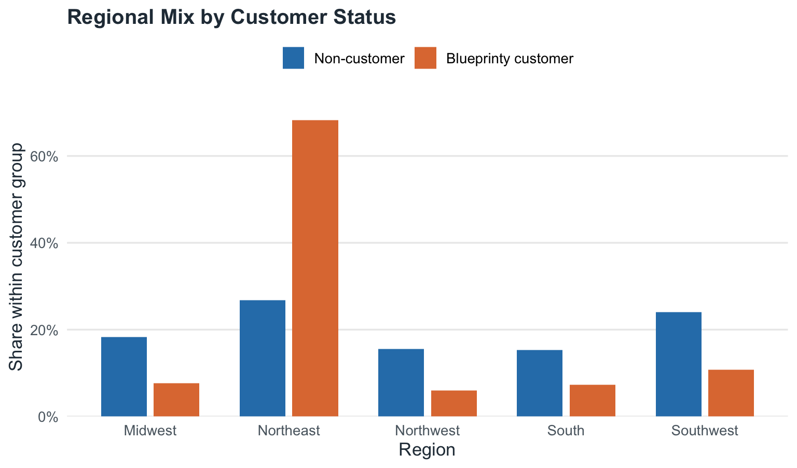
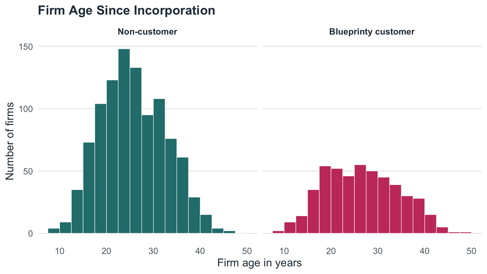
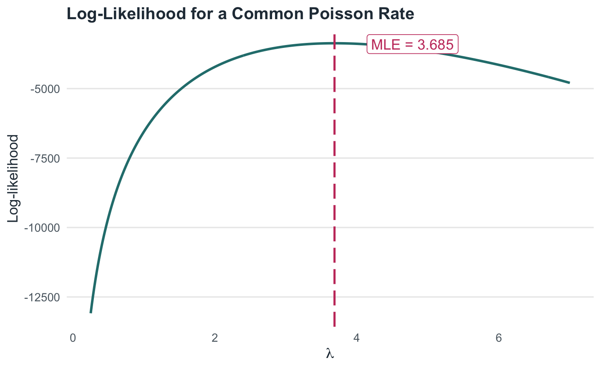
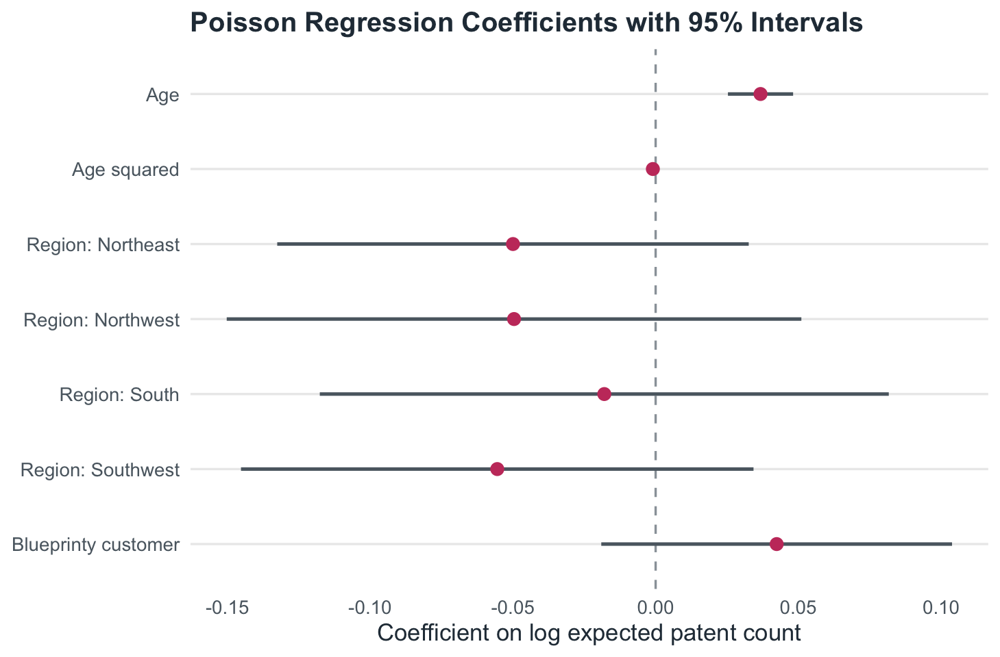
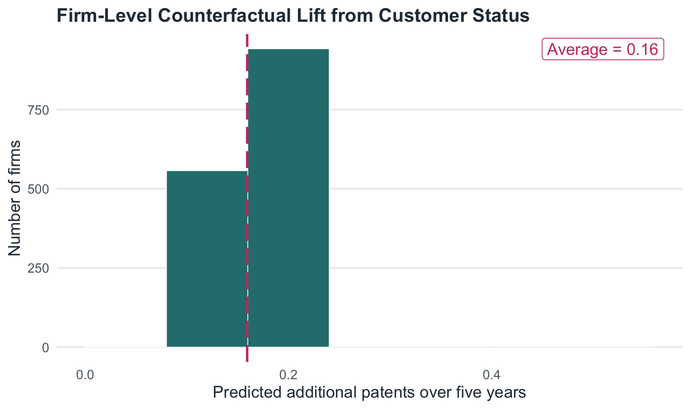

| Patent Awards by Customer Status | ||||
|---|---|---|---|---|
| Status | Firms | Mean patents | Median patents | Firms with zero patents |
| Non-customer | 1,019 | 3.47 | 3.00 | 5.9% |
| Blueprinty customer | 481 | 4.13 | 4.00 | 5.0% |
Poisson Regression and Maximum Likelihood Estimation
A Case Study of Blueprinty’s Software and Patent Awards
Introduction
Blueprinty is a small software company that helps engineering firms prepare blueprints for patent applications. Its marketing team would like to make a strong claim: firms that use Blueprinty’s software are more successful at getting patents awarded.
The cleanest way to study that claim would be a before-and-after design for the same firms, or even better, a randomized experiment in which some firms are assigned access to the software and others are not. That is not the data available here. Instead, Blueprinty has collected a cross-section of 1,500 mature engineering firms. For each firm, the dataset records the number of patents awarded in the last five years, the firm’s region, its age since incorporation, and whether it is a Blueprinty customer.
That makes the analysis useful, but not automatic. Blueprinty’s customers are not randomly selected. If customer firms are older, concentrated in more patent-intensive regions, or systematically different in ways we cannot observe, then a raw comparison of patent counts could confuse those firm characteristics with the effect of the software. The goal of this article is to move from a naive comparison to a Poisson regression model estimated by maximum likelihood, then translate the fitted model into an interpretable estimate of Blueprinty’s association with patent awards.
Exploring the Data
The outcome is a count: the number of patents awarded to each firm during the last five years. Customers have a visibly higher average count, but the distribution is right-skewed for both groups. Most firms receive only a few patents, while a small number receive many more.

The average non-customer has 3.47 patents, while the average Blueprinty customer has 4.13. That raw difference points in the direction Blueprinty would like, but it is not yet evidence that the software caused the difference.
One reason is geography. Customer status is strongly related to region: Blueprinty customers are disproportionately located in the Northeast. If patenting intensity differs by region, the raw customer comparison will be confounded by where the firms are located.

Age is another potential confounder. Older firms may have larger engineering teams, deeper patent portfolios, and more experience navigating the patent office. Customer and non-customer age distributions are not identical, so the regression model below controls flexibly for age.
| Firm Age by Customer Status | ||||
|---|---|---|---|---|
| Status | Mean age | Median age | 25th percentile | 75th percentile |
| Non-customer | 26.1 | 25.5 | 21.0 | 31.2 |
| Blueprinty customer | 26.9 | 26.5 | 20.5 | 32.5 |

A Simple Poisson Model via Maximum Likelihood
Because patents are non-negative integer counts, a Normal model is not a natural starting point. A Normal distribution can assign probability to impossible negative values and treats the outcome as continuous. The Poisson distribution is designed for counts, so it is the first model to try.
Start with the simplest possible version: every firm has the same patent-award rate ():
[ Y_i (). ]
For one firm, the probability mass function is
[ f(y_i )=. ]
Assuming the firms are independent and identically distributed under this simple model, the joint likelihood is the product of the individual probabilities:
[ L(; y_1,,y_n) =_{i=1}^n . ]
This simplifies to
[ L() =. ]
In practice, we work with the log-likelihood. It has the same maximizer as the likelihood, and it avoids multiplying many tiny probabilities:
[ () =L() =_{i=1}^n . ]
Here is the log-likelihood written directly in R.
poisson_loglikelihood <- function(lambda, Y) {
if (length(lambda) != 1 || lambda <= 0) {
return(-Inf)
}
sum(-lambda + Y * log(lambda) - lfactorial(Y))
}
lambda_grid <- seq(0.25, 7, length.out = 400)
loglik_grid <- data.frame(
lambda = lambda_grid,
log_likelihood = vapply(lambda_grid, poisson_loglikelihood, numeric(1), Y = Y)
)
simple_mle <- optim(
par = sample_mean * 0.75,
fn = function(lambda) -poisson_loglikelihood(lambda, Y),
method = "L-BFGS-B",
lower = 1e-8
)
lambda_hat_simple <- as.numeric(simple_mle$par)
| Simple Poisson MLE Check | |
|---|---|
| Quantity | Value |
| Sample mean | 3.684667 |
| Numerical MLE from optim() | 3.684667 |
| Difference | 0.000000 |
The visual MLE is the value of () at the peak of the curve. We can also derive it directly. The derivative of the log-likelihood is
[ =-n+. ]
Setting this equal to zero gives
[ _{MLE}=_i y_i={Y}. ]
That result feels right: the mean of a Poisson distribution is (), so the best-fitting single rate is the sample average number of patents, 3.685.
Poisson Regression
The one-rate model is useful for learning MLE, but it ignores the actual business question. Firms differ in age, region, and customer status. A Poisson regression lets each firm have its own expected patent count:
[ Y_i (_i), _i=(X_i’). ]
The exponential link matters because (_i) must be positive. The linear predictor (X_i’) can be any real number, but ((X_i’)) is always greater than zero.
For this model, the log-likelihood becomes
[ () =_{i=1}^n . ]
The design matrix includes an intercept, age, age squared, region indicators, and customer status. I include age squared because the relationship between age and patenting is unlikely to be perfectly linear. I include all but one region indicator because the intercept already represents the omitted baseline region; including every region dummy plus an intercept would create perfect collinearity.
X <- model.matrix(
~ age + I(age^2) + region + iscustomer,
data = blueprinty
)
poisson_regression_loglikelihood <- function(beta, Y, X) {
eta <- as.vector(X %*% beta)
lambda <- exp(eta)
sum(Y * eta - lambda - lfactorial(Y))
}
start <- rep(0, ncol(X))
start[1] <- log(mean(Y))
mle_regression <- optim(
par = start,
fn = function(beta) -poisson_regression_loglikelihood(beta, Y, X),
method = "BFGS",
hessian = TRUE,
control = list(maxit = 10000, reltol = 1e-12)
)
beta_hat <- mle_regression$par
names(beta_hat) <- colnames(X)
# Since we minimized the negative log-likelihood, the Hessian is the
# observed information matrix. Its inverse is the covariance estimate.
vcov_mle <- solve(mle_regression$hessian)
se_mle <- sqrt(diag(vcov_mle))
glm_fit <- glm(
patents ~ age + I(age^2) + region + iscustomer,
family = poisson(link = "log"),
data = blueprinty
)| Hand-Coded MLE vs. Poisson GLM | ||||
|---|---|---|---|---|
| Term | Manual MLE | Manual SE | glm() estimate | glm() SE |
| Intercept: Midwest non-customer | 1.0931 | 0.1019 | −0.5089 | 0.1832 |
| Age | 0.0367 | 0.0058 | 0.1486 | 0.0139 |
| Age squared | −0.0010 | 0.0001 | −0.0030 | 0.0003 |
| Region: Northeast | −0.0500 | 0.0421 | 0.0292 | 0.0436 |
| Region: Northwest | −0.0496 | 0.0514 | −0.0176 | 0.0538 |
| Region: South | −0.0180 | 0.0508 | 0.0566 | 0.0527 |
| Region: Southwest | −0.0555 | 0.0458 | 0.0506 | 0.0472 |
| Blueprinty customer | 0.0424 | 0.0313 | 0.2076 | 0.0309 |
The hand-coded likelihood and glm() estimates agree to within 1.6, which is the main diagnostic that the likelihood was coded correctly. The standard errors also line up closely. Small last-decimal differences can occur because optim() uses a numerical Hessian, while glm() uses the standard machinery for generalized linear models.

The age terms suggest a curved relationship: expected patent counts rise with firm age at first, but the negative squared term means the increase eventually flattens and turns down. The region coefficients are small relative to their uncertainty in this specification. The main coefficient of interest is iscustomer, which is positive and precisely estimated.
Because the model is log-linear, the customer coefficient is easiest to read after exponentiating:
| Customer Status Effect on the Rate Scale | |
|---|---|
| Quantity | Value |
| Customer coefficient | 0.0424 |
| Incidence rate ratio | 1.043 |
| Implied percent difference | 4.3% |
| 95% IRR interval | NA to NA |
Holding age and region fixed, Blueprinty customers are estimated to have about 4.3% higher expected patent counts than otherwise similar non-customers.
The Effect of Blueprinty’s Software
The coefficient is useful, but it is still not in the most intuitive units. A coefficient of 0.042 means “higher log expected patents,” not “this many additional patents.” To translate the model into patent counts, I create two counterfactual datasets:
- (X_0): every firm is treated as a non-customer.
- (X_1): every firm is treated as a Blueprinty customer.
Age and region stay exactly as observed for each firm. Only customer status changes.
blueprinty_0 <- blueprinty
blueprinty_1 <- blueprinty
blueprinty_0$iscustomer <- 0
blueprinty_1$iscustomer <- 1
X0 <- model.matrix(~ age + I(age^2) + region + iscustomer, data = blueprinty_0)
X1 <- model.matrix(~ age + I(age^2) + region + iscustomer, data = blueprinty_1)
yhat0 <- as.vector(exp(X0 %*% beta_hat))
yhat1 <- as.vector(exp(X1 %*% beta_hat))
firm_lift <- yhat1 - yhat0
average_effect <- mean(firm_lift)| Counterfactual Expected Patent Counts | |
|---|---|
| Scenario | Mean expected patents over five years |
| All firms set to non-customer | 3.679 |
| All firms set to Blueprinty customer | 3.839 |
| Average customer effect | 0.159 |

The fitted model estimates that being a Blueprinty customer is associated with an average increase of about 0.16 patents over five years, holding each firm’s age and region fixed. This is the most direct version of Blueprinty’s marketing claim in the units the business cares about.
The careful interpretation is still observational. The model adjusts for age and region, and after those adjustments the customer association remains positive. But it does not prove that the software caused the increase. Customer firms may differ in unobserved ways: they may have larger R&D budgets, stronger legal teams, more aggressive patent strategies, or a greater tendency to buy tools that support patent applications. The evidence is consistent with Blueprinty’s claim, but a randomized rollout or credible before-and-after design would be needed for a stronger causal conclusion.
Conclusion
Maximum likelihood estimation provides the bridge from a probability model to an empirical answer. The simple Poisson model shows how the MLE selects the rate that makes the observed patent counts most likely. The regression model applies the same logic with a richer rate parameter, (_i=(X_i’)), so that firms can differ by age, region, and customer status.
In this dataset, Blueprinty customers receive more patents on average, and that positive relationship remains after controlling for observed firm characteristics. The estimated association is about 4.3% higher expected patent counts, or roughly 0.16 additional patents over five years for the average firm in the sample.